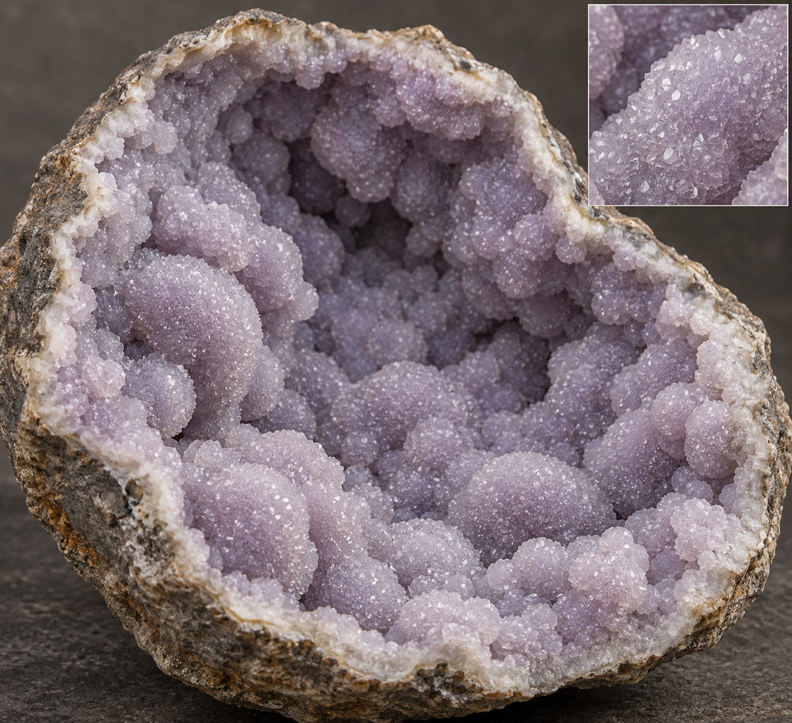

<!doctype html><html lang="zh-CN"><meta charset="utf-8"><meta name="viewport" content="width=device-width,initial-scale=1"><title>葡萄状覆晶 · 三维前后对比</title><link rel="icon" href="data:,"><script type="importmap">{"imports":{"three":"../prototype/vendor/three.module.js"}}</script><style>
*{box-sizing:border-box}body{margin:0;background:#17130f;color:#e8e4dd;font:14px/1.6 -apple-system,BlinkMacSystemFont,'PingFang SC',sans-serif}header,footer{padding:22px 30px}h1{font-size:23px;font-weight:500;margin:0 0 5px}p{margin:4px 0;color:#b8ada0}.pair{display:grid;grid-template-columns:1fr 1fr;gap:1px;background:#4e453a}.pane{background:#17130f;position:relative;height:480px;overflow:hidden}.pane canvas{width:100%;height:100%;display:block;touch-action:none}.label{position:absolute;left:22px;top:15px;pointer-events:none}.label b{font-size:18px;font-weight:500;display:block}.label span{font-size:12px;color:#c6bbaa}button,a{color:inherit;font:inherit}button{padding:9px 16px;background:#302a23;border:1px solid #665a4a;border-radius:6px;cursor:pointer}button:disabled{opacity:.5}.controls{display:flex;gap:10px;flex-wrap:wrap;margin-bottom:12px}#status{font-variant-numeric:tabular-nums}#error{color:#ffb9a5}.note{font-size:12px;margin-top:10px}#movie{width:100%;max-width:750px;display:block;margin-top:15px}#movie[hidden]{display:none}@media(max-width:650px){header,footer{padding:15px}.pane{height:350px}.label{left:10px;top:10px}.label b{font-size:14px}.label span{font-size:10px}}
</style><header><h1>葡萄状覆晶 / 真实 3D 模型对比</h1><p>同一外壳、相机、缩放；两侧均使用同一摄影棚补光与环境反射。拖动任意一侧，两侧同步旋转；滚轮同步缩放。</p></header><main class="pair"><section class="pane" id="before"><div class="label"><b>修改前 · V2</b><span>四处结核群 / 洞底大片裸露</span></div></section><section class="pane" id="after"><div class="label"><b>修改后 · V3</b><span>整个洞壁连生 / 中心与底部覆晶</span></div></section></main><footer><div class="controls"><button id="front">固定对比角度</button><button id="oblique">侧向检查空腔</button><button id="detail">近看覆晶表皮</button><button id="spin">同步旋转演示：关</button><button id="record">录制 8 秒旋转</button><a href="./mineral-research.html">真实照片与形态资料</a> · <a href="./reference-models.html">其他矿物三维预览</a><a href="../prototype/?workshop=1">返回游戏</a></div><p id="status" role="status">载入两个实际 GLB…</p><p id="error" hidden></p><p class="note">程序生成的三维工作样，尚非扫描或摄影级；没有图片投影、随机闪星或游戏存档操作。反光由晶面、PBR 材质和固定摄影棚环境产生。</p><p><a href="https://www.fossilera.com/minerals/1-7-purple-botryoidal-druzy-grape-agate-indonesia">真实标本参考照片</a> · <a href="https://www.khyberminerals.com/collections/50/">覆晶标本与说明</a></p><h2>AI 美术方向图 · 不是上方模型的渲染</h2><video id="movie" controls hidden></video></footer><script type="module" src="./grape-density-review.js?v=1"></script></html>
